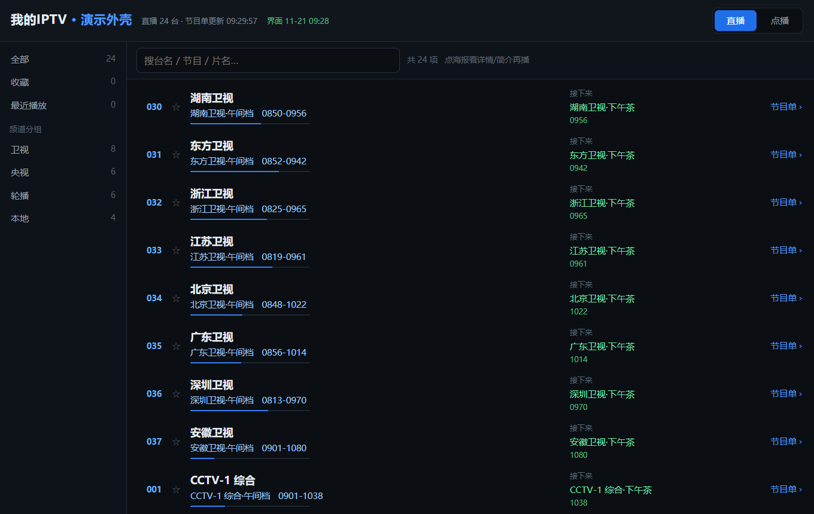

● 只在本机跑 · MIT 开源 · 免安装包不用装 Python
把你家的电视频道，


把你家的电视频道，
搬到电脑上看。
这是一个装在 Windows 电脑上的 IPTV 播放器界面：家里开通了 IPTV、或手上有能用的 m3u / xmltv 清单，它就整理成直播台表 + 三色节目单 + 点播海报墙，点一下交给你已装的播放器（mpv / VLC / PotPlayer）播放。它不提供频道——频道得你自己的。
下载的是 Windows 免安装包：解压到 D:\Program Files\IPTV外壳（没有就新建），双击 IPTV-Shell.exe 就能跑，这台电脑不用装 Python。只有走源码那条路才需要 Python 3.9+。
